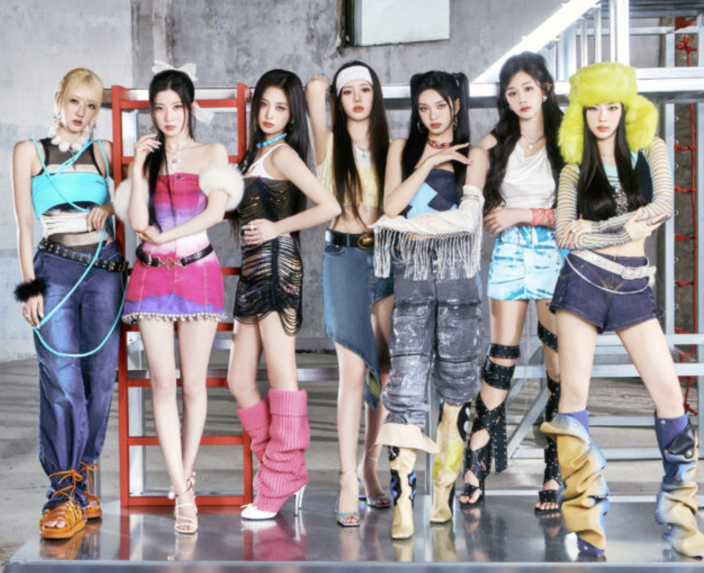
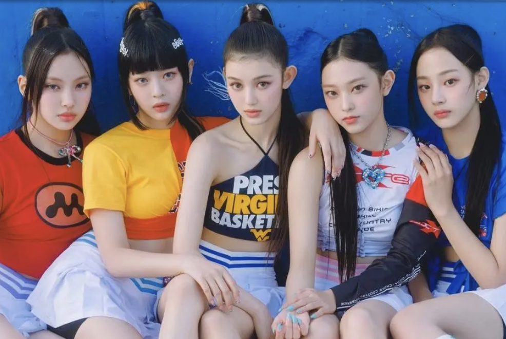

I love dancing, singing, and listening to K-pop music. K-Pop or Korean Pop is the internationally popular, aesthetic-driven, style-bending, and trendsetting music genre of the 21st century. Over the years K-pop groups have evolved through fashion, song content, and stunning beauty standards. There are also differnet roles in every group such as main vocal, lead dancer, center, maknae (the youngest one), lead rapper, etc.. My top choices of groups right now are Aespa, Ive, Babyonster, Itzy, and Le Sserafim. As you go through each page, rate these world famous K-pop groups from Korea!
|  |  | |
|